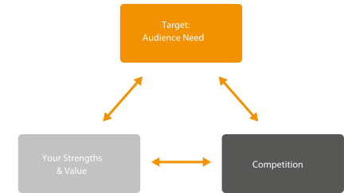
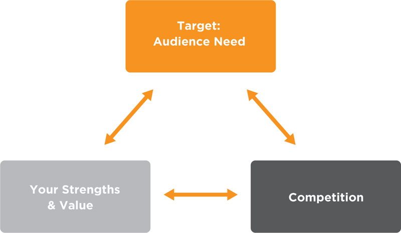
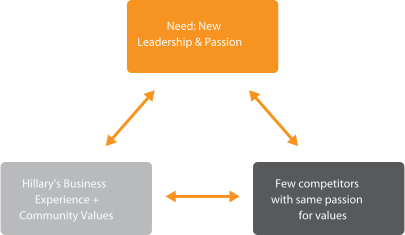
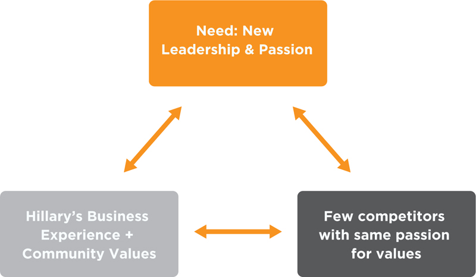

One way to figure out your positioning goal is to explore the options through triangulation (Figure 2.1). That’s just a fancy term for a three-pronged model to understand whether there is an audience (an employer, a boss, a venture capitalist or a client) that values what you have to offer. This is basically what we do in positioning, but the triangulation model helps with understanding the dependencies. By iterating different scenarios in the triangulation model, you will find the best option for you before writing your positioning statement.
Figure 2.1
Triangulation Model
What category can you lead?
 
Remember Hillary Freeman, who wanted a seat on the Palo Alto City Council? The target audience need we identified was that many Palo Alto voters wanted new leadership and passion for their values. Hillary’s strengths and values were that she was a high-tech business executive who had demonstrated community values as a community and schools volunteer leader. We established that there was a need for a candidate with Hillary’s strengths and values, but then we had to see if other candidates (her competition) could fulfill the audience need. Her opportunity was that few, if any, candidates demonstrated her passion and grass-roots support across key constituencies: schools, library lovers, youth sports, YMCA and neighborhood groups. If we found that other candidates had the same messages and evidence that Hillary had, we would have had to change Hillary’s positioning goal.
Figure 2.2
Sample Triangulation
Hillary Freeman Has a Competitive Positioning Opportunity
 
Pamela is another interesting example. She had spent the last few years as a marketing director for a drug company and had excellent credentials building her product brands and growing the business. However, she wanted to move away from marketing and get into the area of her passion: ensuring patient access to health care—specifically, her company’s therapeutic drugs. The good news was that there was less competition in this area versus marketing, and her graduate degree from a school of public health helped to distinguish her. The target audience need was real in that her company had significant resources dedicated to patient access and cared about this area. In the end, she positioned herself as an accomplished health care executive and patient access expert. With clarity on her goal and value, she had the confidence to have a frank talk with her boss about her career path.
The result? Her company created a new job for her that was tailored to her passions and talents. Within six months on the job, she was promoted to senior director. Pamela is an excellent example of how to best differentiate yourself for an opportunity by optimizing the triangulation of target audience need, your strengths and value, and competition.